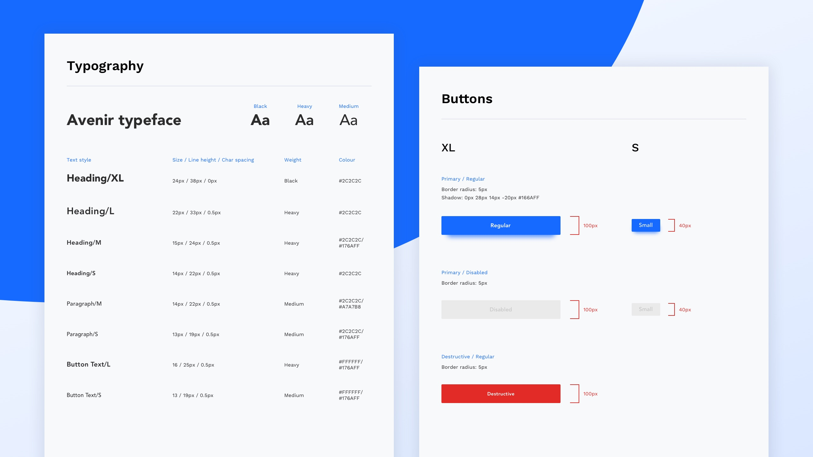

myGP is a patient-facing healthcare application that integrates with NHS services so that users may book GP appointments, order prescription medicine, set reminders, privately message their GP, and more.
Whilst I personally was not a part of the team that developed this app, I did feel, as a user, that there were multiple areas of its appearance & functionality that could be vastly improved, and therefore I was keen to perform a redesign.
The problem
The main issue identified was that the app did not adhere to a set style, and therefore did not serve to ground users that may end up traversing through multiple sections/layers of the platform when carrying out actions that are, of course, important for their health.
A secondary issue (that was closely related to the first) was that some areas of the application did not meet Web Content Accessibility Guidelines (WCAG) 2.1 to a high level (minimum AA), meaning that some visually impaired patients may struggle with some functionality. For a service that aims to provide ease-of-access to healthcare for a large demographic, these issues were quite surprising.
The solution
I decided that the best method to ensure a consistent, accessible style for the redesign would be to establish a design system of reusable components that strictly met WCA guidelines to a level of AA - primarily focusing on achieving standards around contrast levels and use of colour.
Examples of components from this design system can be found below:

Previous version
Below you will also find images from the (then-latest) official version of the myGP application for the sake of comparison with my redesign: